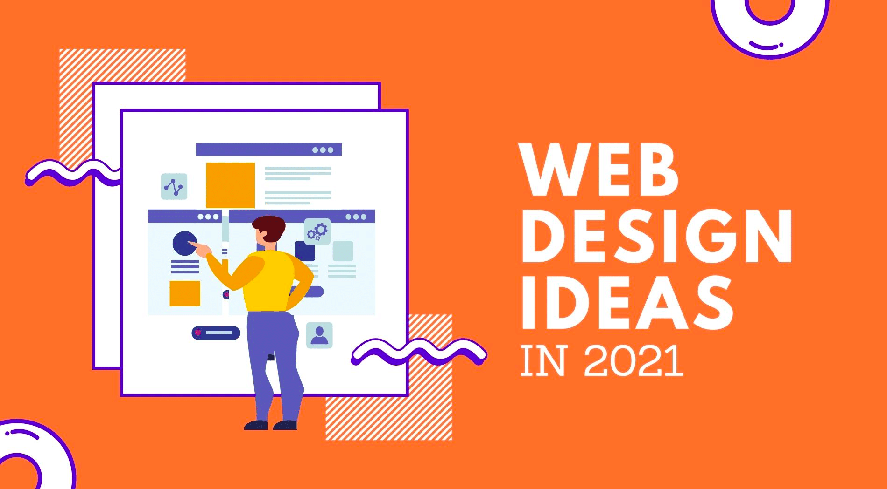

Por medio de las mejores t�cnicas de dise�o, conseguimos destacar la informaci�n m�s relevante
de los productos de una empresa, para captar clientes potenciales y aumentar el rendimiento y productividad de la empresa.
Dise�o de gr�ficos
Dise�o de interfaces de usuario
La interfaz web son elementos gr�ficos que permiten al usuario acceder a los contenidos, navegar e interactuar.
Para lograr que un usuario se quede y vuelva, el dise�o de la interfaz es importante.
Dise�o de contenidos
El contenido web marca la diferencia entre dos empresas que compiten por la venta o oferta de los mismos productos o servicios.
Siempre se puede explicar algo mejor (por escrito, o con v�deos, o con mejores im�genes que la competencia), desde las ventajas de un
producto o el proceso de compra, hasta ofrecer consejo experto o curiosidades.

Desarrollo y programaci�n
Contamos con un equipo de ingenieros, desarrolladores y programadores web expertos en desarrollo y programaci�n a medida de software en la nube,
capaces de desarrollar y programar sistemas para los proyectos y plataformas web m�s exigentes.